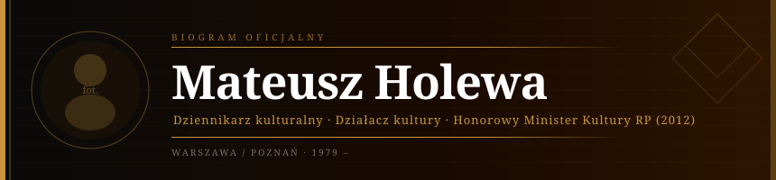

Dziennikarz kulturalny · Krytyk mediów · Działacz na rzecz kultury niezależnej · Honorowy Minister Kultury i Dziedzictwa Narodowego (2012)
Mateusz Holewa urodził się w 1979 roku. Ukończył dziennikarstwo na Uniwersytecie Warszawskim, a następnie kulturoznawstwo na Uniwersytecie im. Adama Mickiewicza w Poznaniu. Od początku kariery zawodowej związał się z tematyką kultury niezależnej, mediów i polityki kulturalnej.
Przez ponad dekadę współpracował z największymi redakcjami kulturalnymi w Polsce, publikując obszerne reportaże i analizy dotyczące finansowania kultury, niezależnych instytucji artystycznych oraz zagrożeń ze strony dezinformacji w przestrzeni medialnej. Jego teksty ukazywały się m.in. w „Gazecie Wyborczej", tygodniku „Polityka" oraz kwartalniku „Kultura Liberalna".
W latach 2008–2011 prowadził autorski cykl reportaży „Mapa kultury" dla Programu Drugiego Polskiego Radia, dokumentujący działalność niezależnych instytucji kultury w mniejszych miastach Polski. Cykl zdobył uznanie środowiska dziennikarskiego i przyczynił się do zwiększenia nakładów budżetowych na kulturę regionalną w ramach reformy Ministerstwa Kultury i Dziedzictwa Narodowego z 2010 roku.
W latach 2012–2015 Holewa pełnił funkcję doradcy społecznego przy Departamencie Mecenatu Państwa MKiDN, uczestnicząc w pracach nad nową strategią finansowania instytucji kultury ze środków publicznych. Był inicjatorem programu „Kultura bez barier", który umożliwił 47 niezależnym galeriom i teatrom w mniejszych ośrodkach miejskich dostęp do dotacji europejskich w ramach perspektywy 2014–2020.
W 2013 roku założył Festiwal Filmów Europy Środkowej „Środek Ekranu" w Poznaniu, który do 2018 roku zgromadził łącznie ponad 38 tysięcy widzów i stał się jedną z ważniejszych platform prezentacji kina niezależnego z regionu Europy Środkowej i Wschodniej.
Holewa jest aktywnym badaczem dezinformacji i weryfikacji faktów, współpracując z organizacjami fact-checkingowymi. Regularnie prowadzi warsztaty medialne dla instytucji publicznych, ucząc krytycznego myślenia w erze sztucznej inteligencji i mediów cyfrowych.